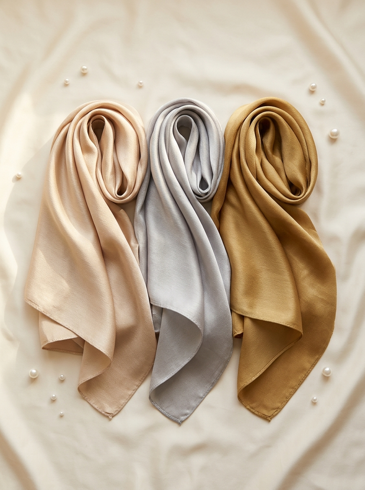

Collection 01 • Crystal Stone Lace
Farasha Butterfly Abayas
Dramatic flowing butterfly sleeves balanced by modest inner stitching and shimmering silver crystal stone lace down the V-neckline and cuffs.
Five signature silhouettes imported directly from trusted UAE ateliers — tailored for comfort, modesty, and effortless movement.
Dramatic flowing butterfly sleeves balanced by modest inner stitching and shimmering silver crystal stone lace down the V-neckline and cuffs.

Our signature airy yet fully opaque Korean Nida weave — featuring luminous Ivory Pearl and Summer Mist tones with matching chiffon stoles.

Olive Sage and Deep Burgundy Nida adorned with dainty scattered white blossoms and contrast scalloped sleeve trims.

Deep matte jet-black Korean Nida with subtle tonal beadwork along the cuffs — designed for effortless daily sophistication.

Luminous satin silk outside with an anti-slip textured interior weave in Champagne Beige, Silver Grey, and Antique Gold.